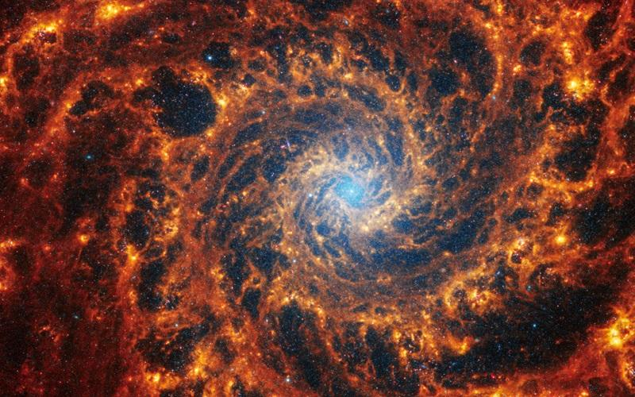

Published January 30, 2024
WASHINGTON, Jan 29 (Reuters) - A batch of newly released images captured by the James Webb Space Telescope show in remarkable detail 19 spiral galaxies residing relatively near our Milky Way, offering new clues on star formation as well as galactic structure and evolution.
The images were made public on Monday by a team of scientists involved in a project called Physics at High Angular resolution in Nearby GalaxieS (PHANGS) that operates across several major astronomical observatories.
The closest of the 19 galaxies is called NGC5068, about 15 million light years from Earth, and the most distant of them is NGC1365, about 60 million light years from Earth. A light year is the distance light travels in a year, 5.9 trillion miles (9.5 trillion km).
The James Webb Space Telescope (JWST) was launched in 2021 and began collecting data in 2022, reshaping the understanding of the early universe while taking wondrous pictures of the cosmos. The orbiting observatory looks at the universe mainly in the infrared. The Hubble Space Telescope, launched in 1990 and still operational, has examined it primarily at optical and ultraviolet wavelengths.
Spiral galaxies, resembling enormous pinwheels, are a common galaxy type. Our Milky Way is one.